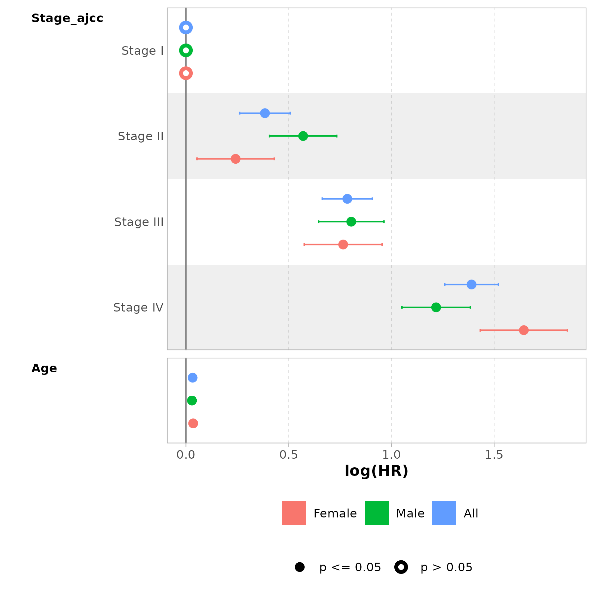

Quickly Analyze Cancer Data with Data from UCSCXenaShiny
Shixiang Wang
Central South Universitywangshx@csu.edu.cn
2025-08-18
Source:vignettes/quick-analyze-cancer-data.Rmd
quick-analyze-cancer-data.Rmd
library(bregr)
#> Welcome to 'bregr' package!
#> =======================================================================
#> You are using bregr version 1.2.0
#>
#> Project home : https://github.com/WangLabCSU/bregr
#> Documentation: https://wanglabcsu.github.io/bregr/
#> Cite as : arXiv:2110.14232
#> =======================================================================
#>
library(dplyr)
#>
#> Attaching package: 'dplyr'
#> The following objects are masked from 'package:stats':
#>
#> filter, lag
#> The following objects are masked from 'package:base':
#>
#> intersect, setdiff, setequal, union
if (!requireNamespace("UCSCXenaShiny")) {
install.packages("UCSCXenaShiny")
}
#> Loading required namespace: UCSCXenaShiny
library(UCSCXenaShiny)
#> =========================================================================================
#> UCSCXenaShiny version 2.2.0
#> Project URL: https://github.com/openbiox/UCSCXenaShiny
#> Usages: https://openbiox.github.io/UCSCXenaShiny/
#>
#> If you use it in published research, please cite:
#> Shensuo Li, Yuzhong Peng, Minjun Chen, Yankun Zhao, Yi Xiong, Jianfeng Li, Peng Luo,
#> Haitao Wang, Fei Zhao, Qi Zhao, Yanru Cui, Sujun Chen, Jian-Guo Zhou, Shixiang Wang,
#> Facilitating integrative and personalized oncology omics analysis with UCSCXenaShiny,
#> Communications Biology, 1200 (2024), https://doi.org/10.1038/s42003-024-06891-2
#> =========================================================================================
#> --Enjoy it--UCSCXenaShiny offers extensive builtin cancer datasets and data query functions to facilitate analysis and visualization.
Obtain Data
data <- inner_join(
tcga_clinical_fine,
tcga_surv |> select(sample, OS, OS.time),
by = c("Sample" = "sample")
) |> filter(!is.na(Stage_ajcc), !is.na(Gender))
head(data)
#> # A tibble: 6 × 10
#> Sample Cancer Age Code Gender Stage_ajcc Stage_clinical Grade OS OS.time
#> <chr> <chr> <dbl> <chr> <chr> <chr> <chr> <chr> <dbl> <dbl>
#> 1 TCGA-… ACC 58 TP MALE Stage II NA NA 1 1355
#> 2 TCGA-… ACC 44 TP FEMALE Stage IV NA NA 1 1677
#> 3 TCGA-… ACC 23 TP FEMALE Stage III NA NA 0 2091
#> 4 TCGA-… ACC 30 TP MALE Stage III NA NA 1 365
#> 5 TCGA-… ACC 29 TP FEMALE Stage II NA NA 0 2703
#> 6 TCGA-… ACC 30 TP FEMALE Stage III NA NA 1 490Execute bregr Pipeline
Assessing the influence of AJCC Stage on overall survival can be done by analyzing data grouped by gender.
m <- br_pipeline(
data = data,
y = c("OS.time", "OS"),
x = "Stage_ajcc", x2 = "Age",
group_by = "Gender",
method = "coxph"
)
#> exponentiate estimates of model(s) constructed from coxph method
#> at default
m
#> an object of <breg> class with slots:
#> • y (response variable): OS.time and OS
#> • x (focal term): Stage_ajcc
#> • x2 (control term): Age
#> • group_by: Gender
#> • data: <tibble[,11]>
#> • config: <list: method = "coxph", extra = "">
#> • models: <list: FEMALE_Stage_ajcc = <coxph>, MALE_Stage_ajcc = <coxph>, and
#> All_Stage_ajcc = <coxph>>
#> • results: <tibble[,22]> with colnames Group_variable, Focal_variable, term,
#> variable, var_label, var_class, var_type, var_nlevels, contrasts,
#> contrasts_type, reference_row, label, n_obs, n_ind, n_event, exposure,
#> estimate, std.error, …, conf.low, and conf.high
#> • results_tidy: <tibble[,9]> with colnames Group_variable, Focal_variable,
#> term, estimate, std.error, statistic, p.value, conf.low, and conf.high
#>
#> Focal term(s) are injected into the model one by one,
#> while control term(s) remain constant across all models in the batch.
br_get_results(m, tidy = TRUE) |>
knitr::kable()| Group_variable | Focal_variable | term | estimate | std.error | statistic | p.value | conf.low | conf.high |
|---|---|---|---|---|---|---|---|---|
| FEMALE | Stage_ajcc | Stage_ajccStage II | 1.273682 | 0.0959397 | 2.521499 | 0.0116856 | 1.055351 | 1.537181 |
| FEMALE | Stage_ajcc | Stage_ajccStage III | 2.149478 | 0.0967063 | 7.912875 | 0.0000000 | 1.778347 | 2.598062 |
| FEMALE | Stage_ajcc | Stage_ajccStage IV | 5.178744 | 0.1081300 | 15.209118 | 0.0000000 | 4.189710 | 6.401251 |
| FEMALE | Stage_ajcc | Age | 1.035787 | 0.0025991 | 13.528430 | 0.0000000 | 1.030524 | 1.041077 |
| MALE | Stage_ajcc | Stage_ajccStage II | 1.768884 | 0.0833656 | 6.841537 | 0.0000000 | 1.502237 | 2.082861 |
| MALE | Stage_ajcc | Stage_ajccStage III | 2.235855 | 0.0811756 | 9.912137 | 0.0000000 | 1.906983 | 2.621443 |
| MALE | Stage_ajcc | Stage_ajccStage IV | 3.379213 | 0.0849960 | 14.325886 | 0.0000000 | 2.860664 | 3.991759 |
| MALE | Stage_ajcc | Age | 1.029710 | 0.0023311 | 12.559176 | 0.0000000 | 1.025016 | 1.034425 |
| All | Stage_ajcc | Stage_ajccStage II | 1.468986 | 0.0628836 | 6.115624 | 0.0000000 | 1.298647 | 1.661668 |
| All | Stage_ajcc | Stage_ajccStage III | 2.193520 | 0.0621347 | 12.642015 | 0.0000000 | 1.942014 | 2.477597 |
| All | Stage_ajcc | Stage_ajccStage IV | 4.014838 | 0.0665694 | 20.880417 | 0.0000000 | 3.523741 | 4.574377 |
| All | Stage_ajcc | Age | 1.033083 | 0.0017248 | 18.869895 | 0.0000000 | 1.029596 | 1.036581 |
Generate Visualizations
For example:
m <- br_rename_models(m, c("Female", "Male", "All"))
#> rename model names from "FEMALE_Stage_ajcc", "MALE_Stage_ajcc", and
#> "All_Stage_ajcc" to "Female", "Male", and "All"
br_show_forest_ggstats(m)
Explore Further
Besides, using tcga_surv_get(), you can efficiently
retrieve values for a specified gene
(c("mRNA", "miRNA", "methylation", "transcript", "protein", "mutation", "cnv"))
from the TCGA cohort.
For more comprehensive guidance on querying various omics data from different databases/cohorts, refer to the Molecular Data Query section of the UCSCXenaShiny tutorial book.